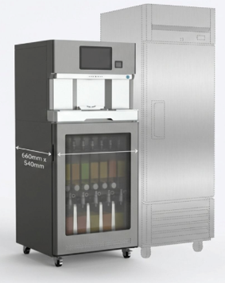

Bubble tea shop market size, 2026.
Summer concert pilot proposal
An Automated Boba Bar for TD Garden
Premium boba at concourse speed. A summer concert pilot, ahead of the Bruins & Celtics seasons.
Chilled tea with milk or fruit and chewy tapioca provided by INFINITEA & Mascon Inc. — alcohol-free, customizable, and sealed for the concourse.
Explore
01 / Market
A growing category meets a shifting drink occasion.
Boba creates a premium, alcohol-free option for guests who want flavor, customization and a visually distinctive drink.
U.S. bubble tea shop CAGR, 2020–2025.
Adults 18–34 who reported drinking alcohol in 2025.
People hosted by TD Garden each year.
Young guests are drinking differently
Gallup reports alcohol use among young adults fell to 50% in 2025, from 59% in 2023 and 72% two decades earlier.
A premium zero-proof gap
Boba can capture spend from under-21 guests, families and adults choosing a non-alcoholic occasion.
A format made for events
Sealed cups, customizable flavors and a premade buffer support high-volume handoff without adding a full tea bar.
TD Garden does not publicly report a venue-wide age mix. The pilot is designed to measure attach rate by event type rather than assume a demographic percentage.
01
The alcohol-free occasion is underserved.
Guests can choose soda or water, but there are fewer premium non-alcoholic beverages with the perceived value of a specialty drink.
02
Traditional boba service is too labor-heavy.
Manual measuring, mixing and recipe control are difficult to reproduce inside an existing high-volume stand.
03
Peak windows reward speed and consistency.
Concert preshow and game intermissions concentrate demand into short windows where queue time directly limits sales.
02 / ROI
One stand can create a meaningful new revenue line.
Planning model: $10 selling price and approximately $1.15 ingredient cost per cup.
500 cups
across three Model K units
→
$5,000
gross sales per event
→
$4,425
ingredient-level contribution*
Event economics calculator
Event sales$5,000
Event contribution$4,425
Annual sales$625,000
Annual contribution$553,125
*Before labor, merchant fees, tax, packaging variance, waste and any venue revenue-share. The calculator is an illustrative planning model, not a forecast or guarantee.
Why 500 cups is operationally plausible
- 1≈167 cups per machine500 cups divided across three Model K units — below the proposed ≈191-cup refill point.
- 2≈70 minutes of productionAt the manufacturer planning rate of 144 cups per hour per unit, running in parallel.
- 32.6% attach rate at capacity500 cups against TD Garden's maximum 19,580-seat configuration.
- 4Scale the stand, not the recipe complexityVolume increases by adding identical Model K units and keeping the same operating sequence.

Why Model K
Small footprint. Full beverage platform.
Model K is designed to roll into an existing service line, lock into position and run from one commercial power connection. Its narrow footprint supports a pilot without building a new specialty-drink stand.
≈25 secplanning cycle per cup
144/hrtheoretical output per unit
17ingredient containers
≈191cups before refill
04 / Operations
Two parallel lanes: guest handoff and premade replenishment.
The base model separates responsibilities so the guest-facing cashier does not wait for the 25-second production cycle.
0
1
2
3
4
5
6
7
8
9
10
11
12
13
14
15
16
17
18
19
20
21
22
23
24
Cashier
Drink maker
Why the lanes work:
The cashier fulfills the current guest order from a premade buffer while the drink maker replenishes the next cup. Cross-training remains useful during low volume, but the peak-window model protects both lanes.
01
Cashier lane
Order & pickup
The cashier confirms the order, retrieves the matching drink from the premade zone and completes the handoff without waiting for production.
Guest-facing handoff≈6 sec
02
Drink-maker lane
Auto dispense + parallel prep
The machine dispenses independently while the employee prepares the next ice-filled serving cup.
Automated dispense≈6 sec
03
Drink-maker lane
Shake, seal & restock
The drink is automatically shaken, poured into the iced serving cup, sealed and returned to the premade zone.
Finish + restock≈10–14 sec
Real-world validation
See the actual machine make a drink.
This footage is not AI-generated. It shows the real dispensing workflow so TD Garden's food-and-beverage and operations teams can evaluate the machine behavior directly.
Actual Model K operating sequence
Real cup placement and dispense behavior
Pilot will validate output, labor and cleaning assumptions
05 / Pilot
One stand. One summer. Real arena data before the season.
A tightly scoped pilot lets the teams validate demand, throughput, labor, cleaning and stand fit before any expansion decision.
1existing concourse stand
2–3×Model K units, finalized after site walk
2 mo.summer concert window
Lease waivedduring the proposed pilot*
MID–LATE AUG 2026
Machines delivered
Model K units arrive at the selected TD Garden stand.
SAME DAY
Installed & live
Positioned, calibrated and commissioned with the operating team.
SEPT–OCT 2026
Trained & running
Mascon supports training, opening checks and early event operation.
PILOT END
Review & decide
Joint review of revenue, throughput, guest response and operating fit.
Proposed TD Garden cost: ingredients.
Machine lease waived during the pilot; final responsibilities, service scope and commercial terms remain subject to the signed pilot agreement.
What we will measure
Cups and revenue per event, peak-window throughput, stockouts, labor touch time, cleaning completion, guest response and event-type attach rate.
Sources & planning notes
Public market and venue data are sourced below. Model K performance and pilot terms are manufacturer / proposal inputs to be validated in the pilot.
- IBISWorld — Bubble Tea Shops in the U.S.: $2.6B market size in 2026; 10.2% CAGR between 2020 and 2025.
- Gallup, 2025: alcohol use among young adults fell from 59% in 2023 to 50% in 2025.
- Gallup, 2023: 62% of adults under 35 drank, down from 72% two decades earlier.
- TD Garden — About the Venue: 3.5M+ annual guests, 200+ events annually, 47 concession stands and maximum capacity of 19,580.
- TD Garden, 2023: 50 concerts plus more than 200 special events and Bruins / Celtics home games.
- Model K planning inputs supplied for this proposal: ≈25 seconds per cup, 144 cups/hour, 17 ingredient containers, ≈191 cups before refill, 660 × 540 mm cabinet footprint, casters and single power connection.
- ROI assumptions: $10 selling price; $1.15 ingredient cost; gross contribution excludes labor, tax, fees, waste, packaging variance and venue revenue share.